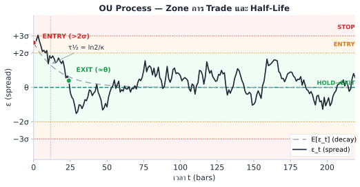
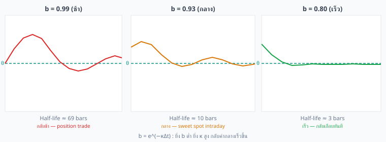
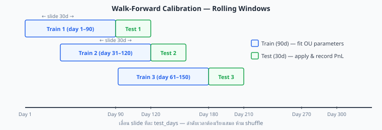

OU Process คือ "สปริงที่มี noise" — ยิ่งดึง spread ออกจากค่ากลาง สปริงยิ่งดึงกลับแรง
Half-life บอกว่า spread ใช้เวลากลับครึ่งทางนานแค่ไหน → กำหนดว่าเราจะ trade แบบ intraday หรือ swing
| Parameter | ชื่อ | ความหมาย trade | ค่าปกติ |
|---|---|---|---|
| κ > 0 | Mean-reversion speed | ยิ่งมาก spread กลับเร็ว → ต้อง execute เร็ว | 1–5 ต่อวัน |
| θ | Long-run mean | ค่ากลางที่ entry/exit อิงอยู่ — ถ้าเปลี่ยนบ่อยต้อง re-calibrate | ≈0 หรือ avg funding diff |
| σ > 0 | Diffusion (noise) | ยิ่งมาก spread ผันผวนมาก → threshold ต้องกว้างกว่า fee | 0.01–0.5% ต่อ √วัน |
SDE นี้ solve ได้ closed-form ทำให้เราคำนวณ expected value ได้ทุกเวลา:
เริ่มที่ ε₀ = θ + gap₀ (ห่างจากค่ากลาง gap₀)
หลังเวลา t: ε คาดว่าจะอยู่ที่ θ + gap₀·e^{−κt}
gap ลดลงด้วยอัตรา e^{−κt} → ยิ่งนาน ยิ่งใกล้ θ
ความไม่แน่นอนของ ε เพิ่มขึ้นตามเวลา แต่ไม่ขยายไปเรื่อยๆ
เมื่อ t → ∞ : Var → σ²/(2κ) = ความแปรปรวน stationary (steady-state)
เมื่อ t → 0 : Var → 0 (รู้ตำแหน่ง ε ชัดเจน)
ยิ่ง κ สูง (mean reversion เร็ว) → Var เพิ่มช้า และเข้าสู่ steady-state เร็วขึ้น
เวลาที่ gap ระหว่าง ε และ θ ลดลงครึ่งหนึ่ง
ถ้า spread เบี่ยง 1% จาก θ → หลัง τ₁/₂ จะเหลือ 0.5%

| κ (ต่อวัน) | Half-life | ประเภท Trade | ข้อกำหนด Execution |
|---|---|---|---|
| 0.1 | ~7 วัน | Position trade / swing | ไม่เร่ง ต้องมี margin buffer |
| 0.5 | ~33 ชม. | Swing ข้ามวัน | Monitor วันละครั้ง |
| 1–2 | 8–17 ชม. | Intraday (เหมาะสุด) | Check ทุก 1–2 ชม. |
| 5 | ~3 ชม. | Fast intraday | Algo-assisted execution |
| 10+ | <2 ชม. | Near HFT | ต้องการ co-location, API |
เมื่อ t → ∞ OU process เข้าสู่ stationary distribution ซึ่งเป็น Normal:
σ_ε = stationary std dev — ใช้ตั้ง entry band
ค่า ±2σ ที่ใช้กันทั่วไปมาจาก Gaussian distribution: P(|ε − θ| > 2σ) ≈ 5% แต่ค่า entry ที่ "ถูก" จริงๆ ขึ้นกับ อัตราส่วนระหว่าง fee และ σ_stat ไม่ใช่แค่ตัวเลขทางสถิติ
Breakeven condition (อธิบายเต็มใน บทที่ 4):
±2σ คือ breakeven point สำหรับ fee/σ ratio ทั่วไป ถ้า ratio ของคุณต่างออกไป z_entry ควรต่างตามด้วย:
| เงื่อนไข | z_entry ที่เหมาะ | เหตุผล |
|---|---|---|
| Fee สูง (> 0.10% rt) หรือ σ_stat เล็กใกล้ breakeven | 2.5–3.0 | ต้องการ gross spread มากขึ้นเพื่อครอบ friction |
| Standard (fee ≈ 0.06%, σ_stat >> breakeven) | 2.0 | Classic starting point — ใช้ได้ทั่วไป |
| Fee ต่ำ (< 0.03%) หรือ σ_stat ใหญ่มาก | 1.5–1.7 | Edge ยังคุ้ม แม้ entry ถี่กว่า |
| Crossing rate ต่ำ / ต้องการ trade บ่อยขึ้น | 1.5 | ยอม edge ต่อ trade น้อยลง แต่ได้ trades มากขึ้น |
Stop-loss ±3σ: P(|ε| > 3σ) ≈ 0.3% เป็นเหตุการณ์ผิดปกติ — ถ้า ε ข้าม 3σ แปลว่าโมเดลอาจพัง ไม่ใช่แค่ spread เบี่ยงออกชั่วคราว ค่า 3σ ปรับได้: เข้มขึ้น (2.5σ ถ้าต้องการตัดเร็ว) หรือหลวมขึ้น (4σ ถ้าต้องการ margin buffer มากกว่า) ขึ้นกับ max drawdown ที่รับได้
ข้อมูลจริงเป็น discrete (รายนาที รายชั่วโมง) เมื่อแปลง OU เป็น AR(1):
b = e^{−κΔt} ← mean-reversion coefficient
a = θ(1−b) ← intercept
η_t ~ N(0, σ²(1−b²)/(2κ)) ← noise

เดสก์จริงไม่ได้ trade ทุกคู่ที่ cointegrate — เขา คัดด้วย half-life ก่อน: ถ้า τ½ ยาวกว่า holding budget ที่รับได้ (เช่น > 2 วันสำหรับ intraday book) ก็ทิ้งคู่นั้นทันที เพราะ capital ถูกล็อกนานเกินไป → Sharpe ต่อทุนต่ำ. นอกจากนี้ desk จะ re-estimate half-life แบบ rolling ทุกวัน ถ้ามันยืดออก > 2× จากค่า baseline ถือเป็นสัญญาณ regime change → ลดขนาดหรือปิด ก่อนที่ spread จะค้างยาว
ตัวอย่าง: b = 0.90, Δt = 1 ชม. = 1/24 วัน
κ = −ln(0.90) / (1/24) → −ln(0.90) = 0.1054 → 0.1054 × 24 = 2.53 ต่อวัน
Half-life = ln(2) / 2.53 = 0.274 วัน = 6.6 ชม.
เราเพิ่งเรียนรู้ว่า AR(1) ที่ fit บน spread ε_t ก็คือ OU process ในรูปแบบ discrete — ดังนั้นวิธีหา κ, θ, σ จากข้อมูลจริงคือ fit AR(1) แล้วแปลงค่า ตามขั้นตอนนี้:
สรุป: spread กลับใน ~8 ชม. เปิด position ตอนเช้า → ปิดก่อนค่ำ
OU พื้นฐานตั้งอยู่บนสมมติฐานว่า κ, θ, σ, β คงที่ และ noise เป็น Gaussian — สมมติฐานทั้งสี่นี้พังในตลาดจริง: funding structure เปลี่ยน (θ drift), market crash (σ พุ่ง), liquidation cascade (noise มี fat-tail/jump), correlation เปลี่ยน (β drift). ถ้ายังใช้ค่าเดิม โมเดลจะ ประเมิน z-score ผิด → เข้า/ออก ผิดจังหวะ. ตารางข้างล่างจับคู่แต่ละ assumption ที่พังกับโมเดลที่ใช้แก้ในบทถัด ๆ ไป
| สมมติฐาน OU | เมื่อไรที่ผิด | สัญญาณที่เห็น | โมเดลที่ใช้แทน |
|---|---|---|---|
| κ, θ คงที่ | ตลาด regime change: funding rate เปลี่ยนโครงสร้าง | θ drift ออก, ε ไม่กลับ | Kalman (Ch.15), Regime-Switch (Ch.9) |
| σ คงที่ | ช่วง volatile: market crash, news | residual variance พุ่ง | GARCH on residuals (Ch.7) |
| Gaussian noise | liquidation cascade, news spike | residual มี fat tail, jump | Jump-Diffusion OU (Ch.8) |
| β คงที่ | ตลาดเปลี่ยน correlation | ε drift กลับมา | Kalman Filter β (Ch.15) |
ทั้งเล่มใช้ σ หลายแบบ ต่างกันที่จุดประสงค์และวิธีคำนวณ — ตารางนี้เป็นอ้างอิงกลางที่ควรกลับมาดูทุกครั้งที่สับสน:
| สัญลักษณ์ | ชื่อเต็ม | ความหมาย | คำนวณจาก | ใช้ใน |
|---|---|---|---|---|
| σ (SDE) | Diffusion coefficient | ขนาด noise ใน OU SDE: dε = κ(θ−ε)dt + σ·dW | σ = σ_stat · √(2κ) | Ch.2–3 สมการทฤษฎี |
| σ_stat | Stationary std | Std ของ spread ε ณ steady state — ใช้กำหนด entry/exit band | σ_stat = σ/√(2κ) ≈ std(ε − θ) | Ch.3–4 entry band θ ± 2σ_stat |
| σ_t (GARCH) | Conditional std | Std ของ spread ε ณ เวลา t — ขยายตัวช่วง volatile | σ_t² = ω + α·ε²_{t−1} + β_G·σ²_{t−1} (β_G = GARCH persistence coeff, ไม่ใช่ hedge ratio β) | Ch.7 GARCH z-score |
| σ_robust | Robust std (MAD-based) | Estimate σ_stat ที่ทนต่อ outlier — ไม่กระทบจาก jump | σ_robust = MAD × 1.4826 | Ch.10 robust z-score |
| σ_EMA | EMA-smoothed std | Rolling std ด้วย exponential weighting — Welford-style | Welford online update (Ch.15) | Ch.15 dynamic β tracking |
| สัญลักษณ์อื่น ๆ | ความหมาย |
|---|---|
| ε_t | Spread residual at time t: ε = log(P_A) − β·log(P_B) |
| θ | Long-run mean ของ OU (equilibrium spread level) |
| κ | Mean-reversion speed (ต่อวัน); τ₁/₂ = ln(2)/κ |
| β | Hedge ratio (OLS, TLS, หรือ Kalman) |
| H | Hurst exponent; H < 0.5 = mean-reverting |
| z_t | Z-score ของ spread: (ε_t − θ)/σ_stat หรือ (ε_t − θ)/σ_t |
| τ₁/₂ | Half-life ของ mean-reversion: τ₁/₂ = ln(2)/κ |
| Δt | Bar size ในหน่วยวัน (1-hour bar: Δt = 1/24) |
การ backtest แบบ Static Window คือดู historical data ครั้งเดียว → รู้อนาคตโดยไม่รู้ตัว (lookahead bias)
Walk-Forward แก้ปัญหานี้โดยแบ่งเวลาแบบ rolling ลำดับเสมอ — เราใช้ข้อมูลอดีตเพื่อ fit แล้วทดสอบบนข้อมูลอนาคตที่โมเดลยังไม่เคยเห็น
OU parameters (κ, θ, σ) ไม่คงที่ตลอดกาล ตลาดเปลี่ยนแปลงตามสภาวะเศรษฐกิจ ความเชื่อมั่นของนักลงทุน และโครงสร้าง funding rate — สิ่งนี้เรียกว่า Concept Drift

i += test_days — เลื่อน window ด้วย test_days ไม่ใช่ 1 วัน เพื่อให้แต่ละ test window ไม่ overlap กันWalk-forward ที่อธิบายข้างต้นใช้ rolling window (train window เริ่มต้นเลื่อนไปพร้อมกัน ทิ้งข้อมูลเก่า) แต่มีอีกทางเลือกคือ expanding window (เพิ่มข้อมูลใหม่เข้า train โดยไม่ทิ้งข้อมูลเก่า) ทั้งสองแบบเหมาะกับสถานการณ์ต่างกัน:
| ประเภท | วิธีการ | ข้อดี | ข้อเสีย | เลือกเมื่อ |
|---|---|---|---|---|
| Rolling (fixed) | ใช้ข้อมูล N วันล่าสุด ทิ้งข้อมูลเก่าสุด train = data[i : i+N] | ปรับ regime change ได้เร็ว parameters สะท้อน "ตลาดปัจจุบัน" | estimate ผันผวนกว่า sample เล็กกว่า เสี่ยง lookback bias (§3.10) | ตลาด volatile regime เปลี่ยนบ่อย ต้องการ real-time adaptive |
| Expanding (cumulative) | รวมข้อมูลทั้งหมดตั้งแต่เริ่ม N เพิ่มขึ้นทุก iteration train = data[0 : i+N] | estimate เสถียรกว่า ADF power สูงขึ้นตาม N ลด variance ของ κ, θ | ปรับตัวช้าเมื่อ regime เปลี่ยน ข้อมูลเก่า dilute ค่าปัจจุบัน θ อาจ drift ออกโดยไม่รู้ | pair เสถียร ต้องการ estimate น่าเชื่อถือ market structure ไม่เปลี่ยนมาก |
Walk-forward แก้ lookahead bias ได้ แต่ถ้า train window สั้นเกินไป (เช่น 20–30 วัน) จะเจอ Kendall bias เดิม: κ สูงเกินจริง, half-life สั้นเกินจริง — walk-forward และ lookback sensitivity เป็นคนละปัญหา ต้องแก้ทั้งสองด้วยกัน
Rule of thumb: train window ≥ 30 × expected half-life ไม่ว่าจะใช้ rolling หรือ expanding
ใช้ข้อมูล 360 วัน → walk-forward ได้ 9 windows (train=90d, test=30d, slide=30d)
Half-life เฉลี่ยจาก 9 windows = 7.4 ชั่วโมง (range: 5.2–11.3h) — ความผันผวนของ half-life ระหว่าง windows แสดงว่า OU parameters เปลี่ยนตามช่วงเวลาจริง → justifies การใช้ walk-forward แทน static calibration ถ้าใช้ static จะได้ค่าเดียวตลอด ซึ่งผิดพลาดในหลายช่วง
มีข้อมูล 180 วัน, ตั้งค่า train = 90 วัน, test = 30 วัน, slide = 30 วัน
ถาม: (a) ได้กี่ windows? (b) first trade เริ่มวันที่เท่าไหร่? (c) ถ้าลด train เหลือ 60 วัน จะได้กี่ windows?
(a) จำนวน windows = ⌊(180 − 90) / 30⌋ = ⌊90 / 30⌋ = 3 windows
Window 1: train day 1–90, test day 91–120
Window 2: train day 31–120, test day 121–150
Window 3: train day 61–150, test day 151–180
(b) First trade เริ่มวันที่ 91 — เพราะต้องรอให้ train window แรก (90 วัน) สมบูรณ์ก่อน min lookback ก่อน trade คือวันที่ 91
(c) train=60d: ⌊(180 − 60) / 30⌋ = ⌊120 / 30⌋ = 4 windows — ได้ windows มากขึ้น แต่ fit quality อาจลดลงเพราะ train data น้อยลง
OLS AR(1) บน spread รายชั่วโมง (Δt = 1/24 วัน): b = 0.94, a = 0.00012
std(residuals) = 0.00015
ถาม: (a) κ ต่อวัน (b) half-life เป็นชั่วโมง (c) entry band (d) spread ปัจจุบัน 0.05% จาก θ — ควร enter ไหม?
(a) κ = −ln(0.94)/(1/24) = 0.0619×24 = 1.485 ต่อวัน
(b) τ₁/₂ = ln(2)/1.485 = 11.2 ชั่วโมง
(c) θ = 0.00012/(1−0.94) = 0.002 = 0.2%
σ_stat ≈ std(ε − θ) ≈ residual_std × √(1/(1−b²))
= 0.00015 / √(1 − 0.94²) = 0.00015 / √(0.1164) ≈ 0.00015 / 0.341 ≈ 0.00044 ≈ 0.044%
(สูตร √(1/(1−b²)) แปลง std ของ η_t → std ของ stationary ε; ถ้า b ≈ 0.94 ตัวหารคือ 0.341)
residual_std/√(1−b²) ก็เป็นตัวประมาณค่าของ σ_stat = σ/√(2κ) ตัวเดียวกัน — เป็นเพียงอีกวิธีคำนวณจาก residual ของ AR(1)
Entry band: 0.2% ± 2×0.044% = (0.112%, 0.288%)
(d) spread 0.05% จาก θ = ε อยู่ที่ 0.25% (สมมติอยู่เหนือ θ)
0.25% < entry upper 0.288% → ยังไม่ถึง threshold → ยังไม่ enter
Spread รายชั่วโมง ให้ผล AR(1): b = 0.97
ค่า fee รวม (open+close) = 0.06% per round-trip
ถาม: (a) half-life (b) ถ้าตั้ง entry ที่ 2σ_stat = 0.10% จะถือ position นานแค่ไหนโดยเฉลี่ย และ expected profit คืออะไร (ก่อน fee)?
(a) κ = −ln(0.97)/(1/24) = 0.0305×24 = 0.732 ต่อวัน
τ₁/₂ = ln(2)/0.732 = 0.95 วัน ≈ 22.7 ชั่วโมง
(b) Entry ที่ 2σ = 0.10% จาก θ
Exit ที่ θ (ครบ 2σ) → expected travel = 0.10%
แต่ถ้า exit ที่ 0.5σ = 0.025% → expected travel = 0.075%
Gross profit ≈ 0.075%–0.10%, fee = 0.06% → Net ≈ 0.015%–0.04% per trade
Holding time เฉลี่ย ≈ τ₁/₂ = 22.7 ชม. (ถ้า exit ที่ θ) หรือน้อยกว่า
Trade นี้มี edge บาง — ต้อง calibrate ละเอียดและ monitor σ_stat ไม่ให้ขยาย
ใช้ OU trade Bybit↔Lighter มา 2 สัปดาห์ κ เดิม = 2 ต่อวัน, θ = 0.1%
สัปดาห์ที่ 3: spread ออกไปถึง 0.4% และค้างอยู่นาน 3 วัน ไม่กลับ
ถาม: เกิดอะไรขึ้น และควรทำอะไร?
วินิจฉัย: Regime change — OU parameters เปลี่ยน ที่เป็นไปได้:
ควรทำ:
ถ้า spread ดู mean-revert สวยมากด้วย lookback สั้น แต่พอ lookback ยาวขึ้นกลับ ดูไม่สวย — นั่นคือสัญญาณอันตราย ไม่ใช่สัญญาณว่าคู่นี้ดี
เป็นอาการของ Lookback Selection Bias: combination ของ bias ทางคณิตศาสตร์ที่ทำให้ κ ดูสูงกว่าจริงและ half-life สั้นกว่าจริงเมื่อใช้ window เล็ก — ถ้าไม่แก้จะ over-trade, size ใหญ่เกินไป และขาดทุนเมื่อ live
OLS estimate ของ AR(1) coefficient b มี bias เชิงระบบ เมื่อ N (จำนวน observation) น้อย:
สรุป: random walk ที่มี b=0.97 สามารถ ดูเหมือน mean-revert เร็วมาก ด้วย window 30 bars — Kendall bias สร้างภาพลวงตาโดยไม่ต้องมี alpha จริง
ถ้าลอง lookback หลายค่า (20, 30, 40, 50, 60 วัน) แล้วเลือกค่าที่ spread ดูสวยที่สุด = ทำ 5 tests โดยไม่ปรับ significance level
ในทางสถิติ: ถ้าทดสอบ 20 window บน random walk ล้วน ๆ คาดว่าจะพบอย่างน้อย 1 window ที่ดู stationary โดยบังเอิญที่ 5% significance — แล้วคุณก็จะเลือก window นั้น
กฎ: ห้ามเลือก lookback หลังจากดูผล — ต้องกำหนด lookback ก่อน แล้วค่อย calibrate
Window สั้นอาจกำลังอยู่ในช่วงที่คู่นี้ "cointegrate จริงๆ" — regime ที่ดี เมื่อขยาย window รวม regime อื่น ε จึงดูไม่สวยอีกต่อไป ปัญหา: คุณไม่รู้ล่วงหน้าว่า live trade จะเจอ regime ไหน
| สิ่งที่ทำ | Bias ที่เกิด | ผลที่เห็น (ปลอม) |
|---|---|---|
| เลือก lookback ที่ "สวยที่สุด" | Selection bias | κ สูงเกินจริง, half-life สั้นเกินจริง |
| ใช้ window เล็ก (N น้อย) | Kendall AR bias | b̂ ต่ำกว่าจริง → ดูเป็น mean-reversion |
| ไม่แบ่ง train / test | In-sample overfit + lookahead | backtest ดูดี — live ขาดทุน |
ถ้าตรงหลายข้อ → ผล backtest ไม่น่าเชื่อถือ ต้องทำ Sensitivity Test และ Walk-Forward (§3.9) ใหม่
แทนที่จะเลือก lookback ที่ดูสวย ให้ run calibration ด้วย lookback หลายค่าพร้อมกัน แล้วดูว่า half-life เสถียรข้าม window หรือไม่:
| Lookback | b̂ (OLS) | κ (ต่อวัน) | Half-life | สถานะ |
|---|---|---|---|---|
| 30 วัน | 0.856 | 3.7 | 4.5 ชม. | ⚠️ ไวต่อ regime ของ window |
| 45 วัน | 0.912 | 2.2 | 7.5 ชม. | ยังแกว่งตาม regime |
| 60 วัน | 0.947 | 1.3 | 12.7 ชม. | น่าเชื่อถือ |
| 90 วัน | 0.968 | 0.78 | 21.3 ชม. | น่าเชื่อถือ (reference) |
ถ้าต้องใช้ window สั้นเป็นพิเศษ สามารถ correct Kendall bias ได้เบื้องต้น:
ทดลองใช้ lookback 4 ค่าบน spread คู่หนึ่ง ได้ผล:
| Lookback | b̂ | Half-life |
|---|---|---|
| 20 วัน | 0.72 | 2.1 ชม. |
| 40 วัน | 0.89 | 6.0 ชม. |
| 60 วัน | 0.95 | 13.4 ชม. |
| 90 วัน | 0.97 | 22.7 ชม. |
ถาม: (a) มี Lookback Selection Bias ไหม? (b) ควรใช้ lookback ไหน และ half-life ที่น่าเชื่อถือคือเท่าไหร่? (c) ถ้าต้องการ intraday strategy (hold ≤ 8h) pair นี้เหมาะไหม?
(a) ใช่ — half-life เปลี่ยนจาก 2.1h (lookback 20d) เป็น 22.7h (lookback 90d) = เปลี่ยน > 10× แสดง Kendall bias ชัดเจน ค่าที่ lookback 20d ไม่น่าเชื่อถือ
(b) ควรใช้ lookback 60–90 วัน ที่ estimate เสถียร — half-life ที่น่าเชื่อถือคือ 13–23 ชม.
(c) ไม่เหมาะ intraday — half-life จริงอยู่ที่ 13–23h > 8h target holding → spread กลับช้าเกินไปสำหรับ intraday · ควรใช้เป็น overnight swing strategy แทน
Ch.3 OU Process | ต่อไป → Part II: Hedge Ratio β (Ch.4–6)